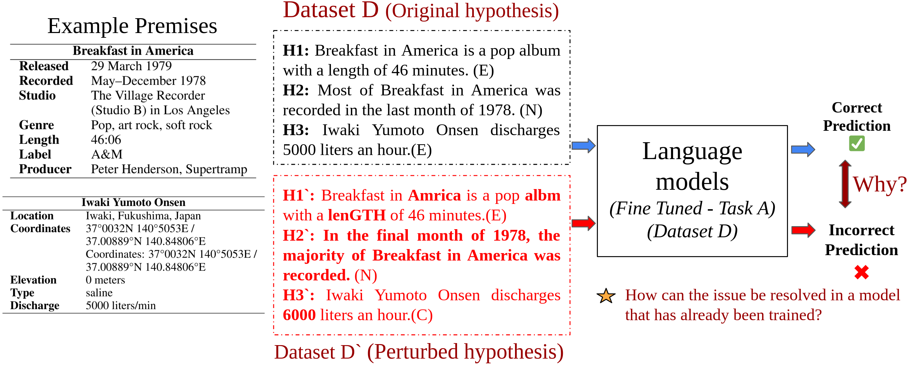
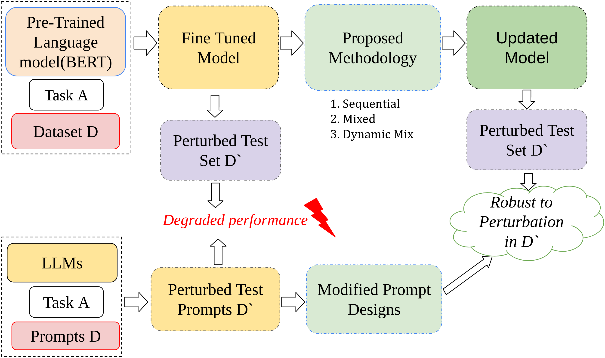

Multi-Set Inoculation: Assessing Model Robustness Across Multiple Challenge Sets
About
Language models, given their black-box nature, often exhibit sensitivity to input perturbations, leading to trust issues due to hallucinations. To bolster trust, it’s essential to understand these models’ failure modes and devise strategies to enhance their performance. In this study, we propose a framework to study the effect of input perturbations on language models of different scales, from pre-trained models to large language models (LLMs). We use fine-tuning to train a robust model to perturbations, and we investigate whether exposure to one perturbation improves or degrades the model’s performance on other perturbations. To address multi-perturbation robustness, we suggest three distinct training strategies. We also extend the framework to LLMs via a chain of thought(COT) prompting with exemplars. We instantiate our framework for the TabularNLI task and show that the proposed strategies train the model robust to different perturbations without losing accuracy on a given dataset.
Dataset
The dataset utilized in this study is INFOTABS, a tabular-NLI dataset introduced by Gupta et al. INFOTABS encompasses a wide range of table domains, categories, and keys, showcasing diverse entity types and structures. Additionally, adversarial perturbations have been applied to INFOTABS, resulting in three test splits: α1 (original test set), α2 (adversarial set), and α3 (zero-shot/out of domain set).
Perturb Challenge Datasets This dataset incorporates perturbations derived from previous studies, augmented using various tools, along with manual adjustments. Each perturbation targets the hypothesis of an input sample, and challenge sets of up to 1,500 samples per perturbation type are curated. To ensure diversity, a selection process is employed when the number of pertinent samples exceeds 1,500. Perturbations are categorized into five types: Character-level (C), Negation-type (N), Numeric (M), Location (L), and Paraphrasing (S).
Complete Dataset : MSIN-INFOTABS
The comprehensive dataset comprises the original INFOTABS dataset and its perturbations.
Perturbation Types:- C: Character-level perturbation
- N: Negation-type perturbation
- M: Numeric perturbation
- L: Location perturbation
- S: Paraphrasing as a perturbation
For BERT's Models
Qj consists of 1,000 examples for testing, and Pj consists of 500 examples for fine-tuning. The union of all challenge test sets is represented as Q, and the corresponding training set as P.
For LLMs
Evaluations are limited to 300 samples from Qj, denoted as Rj (Rj ⊂ Qj). Rj comprises premise and perturbed hypothesis pairs, while R'j contains the same premise with the original unperturbed hypothesis pairs. Demonstrations for prompts are sampled from training sets Pj and P'j, where P'j contains the original unperturbed hypothesis and premise pairs. Testing is conducted on Rj and R'j, where R'j comprises the original unperturbed hypothesis and premise pairs for the examples in Rj.
Examples from our dataset can be viewed here.
Experimental Results
The overall experiments are evaluated on PLMs (Pre-trained language models) by simply evaluating on the NLI task. Robustness of PLMs is checked this way.

The generic experimental design is highlighted above. Different strategies and experimental designs are adopted for PLM and LLMs (Pre-trained language models and Large Language Models resp.)
Text here need
People
This project was created by Vatsal Gupta,Pranshu Pandya, Vivek Gupta and Dan Roth.
Citation
Feel free to cite our paper as below.
@misc{gupta2023multiset,
title={Multi-Set Inoculation: Assessing Model Robustness Across Multiple Challenge Sets},
author={Vatsal Gupta and Pranshu Pandya and Tushar Kataria and Vivek Gupta and Dan Roth},
year={2023},
eprint={2311.08662},
archivePrefix={arXiv},
primaryClass={cs.CL}
}